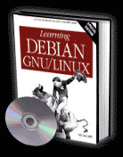

#endim# #begintitle# Learning Debian GNU/Linux #endtitle# #begintext# A perfect resource for beginners and intermediate users alike, Learning Debian GNU/Linux is the definitive guide to the Debian GNU/Linux distribution.Learn how to install Debian Linux, set up and use the X windowing system, perform important system administration tasks, use the Debian package management tools, get Apache up and rolling, and much more!
Whether you're brand new to the Linux operating system or you're just looking to cover all of your bases when it comes to the Debian distribution, Learning Debian GNU/Linux is the only book you'll need to get rolling in no time at all! #endtext# #beginform##formid##endform##pricetxt##endtd# #endtable#